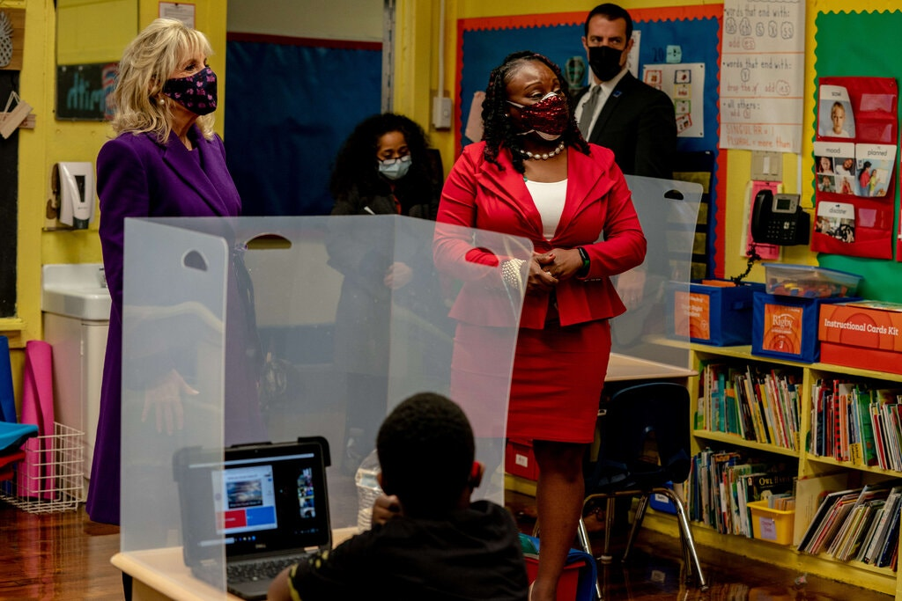

‘I’ve Lost a Lot of Faith’: Suburban Parents
Push Schools to Reopen Faster
Frustration over pandemic reopening plans is growing in New Jersey’s affluent suburbs, where taxes are high and many students are barely in classrooms.


T-Shirts for Microverse Bootcamp
Credit...Edun Habeeb for Photography
By Edun Habeeb
March 23, 2021 | Updated 8:22 a.m. ET
SOUTH ORANGE, N.J. — Kate Walker, a New Jersey mother of three, says she feels like one of the lucky ones: She enrolled her children in a Catholic school for September before a wait-list started.
But she has held off making a final tuition deposit, hoping that her town’s public school district, South Orange-Maplewood, brokers a lasting solution with the teachers’ union, which had resisted a planned phased-in return to school, citing coronavirus safety concerns.
“I’ve lost a lot of faith in the district,” said Ms. Walker, who participated in a recent sit-in outside her 7-year-old son’s elementary school. “We’ve been stopped and started a dozen times.”
Most districts in New Jersey have partially reopened, but one in four children still live in a district where public schools are closed. No state in the Northeast had more districts relying on all-virtual teaching in early March than New Jersey, according to Return To Learn, a database created by a conservative think tank, American Enterprise Institute, and Davidson College. Nationwide, only seven states had a greater proportion of all-remote instruction.
As the distribution of Covid-19 vaccines has accelerated and President Biden has signaled a push for broader reopenings, frustration among parents has grown, particularly in New Jersey’s affluent suburbs, where schools with stellar reputations are a key reason families are willing to pay some of the nation’s highest taxes.
These parents have filed federal lawsuits, held protests, created online petitions and stormed virtual board of education meetings to demand expanded in-person instruction.
The pressure to open schools more fully comes as the infection rate in New Jersey, which is small and densely populated, remains stubbornly high: With a weekly average of 45 cases for every 100,000 residents, the state leads the nation in new infections, according to a New York Times database.
Stanford Professor Andrei Linde celebrates physics breakthrough
In Princeton, where schools are among the best in the state, hundreds of middle and high school parents have joined webinars and school board meetings, many asking for additional face-to-face teaching. In Closter, in northern Bergen County, an online petition urging an immediate return to five days of school, gathered hundreds of signatures within hours.
TIMES EVENT Today, join Times reporters, Gov. Larry Hogan of Maryland and others for a subscriber-only event to reflect on one year of the pandemic, and how we come back.
The drumbeat intensified after the Centers for Disease Control and Prevention announced a major policy shift on Friday, reducing its distancing recommendations to three feet from six feet for all elementary schools and for middle and high schools in areas where the virus infection rate is not high.
Anger at the pace of reopening has led some families who can afford it to enroll their children in private schools, start home-schooling them or move.
New Jersey’s school districts expect to have an estimated 26,000 fewer students by fall, according to state aid funding records. Experts have warned that an exodus of wealthier families could further weaken public schools at a critical moment: while confronting student learning loss.
In South Orange-Maplewood, enrollment in October had dipped by 327 students. By the next school year, officials estimate it could drop by another 62 students, resulting in a total decline of about 5 percent.
“We believe most of it is from people deciding to either move their students into private schools or to keep them home for home-schooling,” Paul Roth, the district’s business administrator, said at a recent board of education meeting.
After lawsuits and the intervention of a mediator, some of the district’s youngest children restarted school in person on March 15, but most students have not been back in class since the start of the pandemic.
If enough children leave a district in New Jersey, it could lead to cuts in state aid, scaled-back programming or potentially layoffs. In South Orange-Maplewood, however, the decline in enrollment was not expected to cause a reduction in state funding, a spokeswoman said.
The first lady, Jill Biden, traveled to New Jersey last week to promote the $1.9 trillion stimulus package, which includes $130 billion for schools. Dr. Biden’s visit drew attention to the state’s reputation for exceptional schools, which were ranked No. 1 in the country this school year by Education Week and U.S. News & World Report.

The first lady, Jill Biden, left, toured a classroom at the Samuel Smith Elementary School in Burlington, N.J.
Several New Jersey cities and counties have held educator-only vaccine distribution events. But the virus’s hold on the state has left teachers and their powerful unions wary of expanded reopening.
Two days after Dr. Biden’s visit, Gov. Philip D. Murphy offered his most unambiguous comments yet about school reopenings, suggesting a shift away from the largely hands-off approach he had maintained since September. He noted that relatively few cases of the virus in New Jersey — 890 out of more than 850,000 total cases — had been linked to in-school transmission.
“It is time to stem this tide before more students fall away,” Mr. Murphy said. “A full year out of their classrooms is not how students move forward or how our world-class extraordinary educators move forward in their professions, for that matter.”
Public schools in the state’s largest cities remain closed, though many are preparing to reopen to some students in mid-April.
“It is our complete expectation that every school will be open, and every student and educator will be safely in their classrooms for full-time, in-person instruction for the 2021-2022 academic year,” Mr. Murphy said.
Marie Blistan, a close ally of Mr. Murphy who leads the New Jersey Education Association, the state’s largest teachers’ union, said expanded vaccination access for educators and the infusion of federal funding had put schools in a better position to reopen more fully.
“I agree with the governor that it’s time for everybody to get back to normal, but to do it safely,” she said, adding that she understood parents’ frustration.
“They’re upset and angry and I absolutely feel for them,” she said. “But in the end our members have advocated for the health and safety of their kids.”
A version of this article appears in print on March 18, 2014, Section A, Page 1 of the New York edition with the headline: Space Ripples Reveal Big Bang’s Smoking Gun.